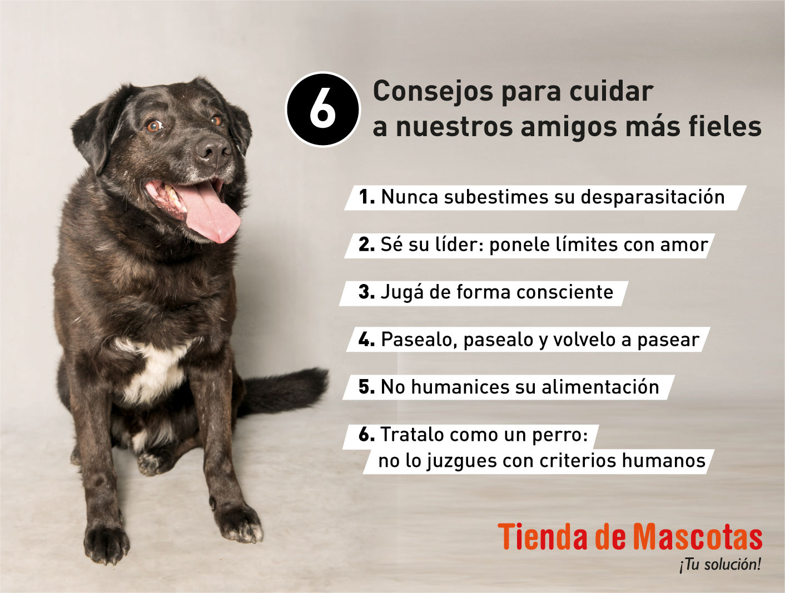

Consejos de salud para nuestras mascotas
A continuacion brindamos unos cuantos consejos tanto de salud mental emocional y fisica para nuestras
mascotas

-
1) Visita regularmente al veterinario!!:
Es importante que lleves a tu
mascota a chequeos regulares para asegurarte de que está en buena salud y detectar
cualquier problema a tiempo.
-
2) Mantén el peso adecuado!!:
El sobrepeso y la obesidad pueden causar una
serie de problemas de salud en las mascotas, como diabetes, problemas de
articulaciones y enfermedades del corazón. Asegúrate de que tu mascota tenga una
dieta equilibrada y realiza suficiente actividad física.
-
3) Vacuna a tu mascota!!:
Las vacunas son una parte importante del cuidado
preventivo de la salud de tu mascota. Asegúrate de mantener al día el calendario
de vacunación de tu mascota.
-
4) Proporciona una alimentación saludable!!:
La alimentación de tu mascota
debe ser balanceada y adecuada para su edad, tamaño y necesidades nutricionales.
Consulta con un veterinario para obtener recomendaciones específicas.
-
5) Ejercicio diario!!:
El ejercicio es importante para mantener a tu mascota
en buena forma física y mental. Asegúrate de proporcionar suficiente actividad
diaria para mantener a tu mascota sana y feliz
-
6) Mantén una buena higiene!!:
Mantener una buena higiene es fundamental
para la salud de tu mascota. Baña a tu mascota regularmente y cepilla su
pelaje para evitar problemas de piel y para reducir la cantidad de pelo que
ingiere cuando se lame.
-
7)Control de parásitos
Las pulgas, garrapatas, gusanos y otros parásitos
pueden causar problemas de salud graves en las mascotas. Asegúrate de utilizar
productos adecuados y seguir las instrucciones del veterinario para prevenir
y controlar los parásitos.
-
8) Proporciona agua fresca!!:
Tu mascota debe tener acceso constante a agua
fresca y limpia para mantenerse hidratada y saludable.
-
9) Mantén la dentadura de tu mascota limpia!!:
Los problemas dentales pueden
ser una causa de dolor y enfermedad en las mascotas. Asegúrate de proporcionar
una dieta adecuada y cepillar regularmente sus dientes para prevenir problemas
dentales.
-
10) Proporciona un ambiente seguro!!:
Asegúrate de que tu mascota esté segura
en su entorno. Evita exponerla a sustancias tóxicas, asegúrate de que no tenga
acceso a objetos peligrosos, y mantén la casa limpia y libre de objetos que puedan
causar accidentes.

Si deseas consultar o comunicarte te dejamos un numero de consultas para poder contactarte en caso de alguna
emergencia, o alguna duda particular que tengas. Te responderan las personas mas capacitadas para comentar
que ocurre con tu amada mascota!
3874064403